Piezas de carrocería para KIA Picanto
103 piezas disponibles hoy para KIA Picanto, cada una con su foto y su código: parrillas (21), lámparas traseras (14), covers de halógena (13), puertas (7). Dinos el año de tu carro y te confirmamos si le sirve.
- Garantía de 3 días
- Foto real de cada pieza
- Efectivo, Yappy o ACH
- Lunes a sábado, 8:00 a. m. a 5:00 p. m.
Parrillas para KIA Picanto 21
 400Picanto2021-23 · original
400Picanto2021-23 · original 409Picanto2015-17 · original nuevo
409Picanto2015-17 · original nuevo 410Picanto2015-17 · original nuevo
410Picanto2015-17 · original nuevo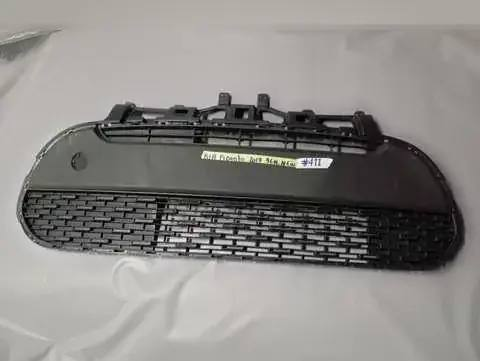
411Picanto2015-17 · genérico nuevo 412Picanto2015-17 · original nuevo
412Picanto2015-17 · original nuevo 427Picanto2017-23 · original
427Picanto2017-23 · original 430Picanto2015-17 · original nuevo
430Picanto2015-17 · original nuevo 431Picanto2015-17 · original
431Picanto2015-17 · original 433Picanto2017-18 · original
433Picanto2017-18 · original 434Picanto2017-24 · original nuevo
434Picanto2017-24 · original nuevo 435Picanto2017-24 · original nuevo
435Picanto2017-24 · original nuevo 439Picanto2015-17 · genérico nuevo
439Picanto2015-17 · genérico nuevo 440Picanto2017-24 · original nuevo
440Picanto2017-24 · original nuevo 456Picanto2015-17 · original
456Picanto2015-17 · original 458Picanto2015-17 · original
458Picanto2015-17 · original 459Picanto2015-17 · original
459Picanto2015-17 · original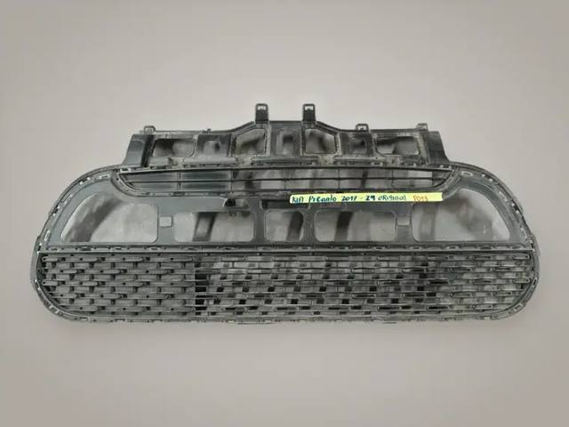
P013Picanto2017-24 · original P012Picanto2017-20 · original
P012Picanto2017-20 · original P039Picanto2017 · original
P039Picanto2017 · original P048Picanto2017-20 · original
P048Picanto2017-20 · original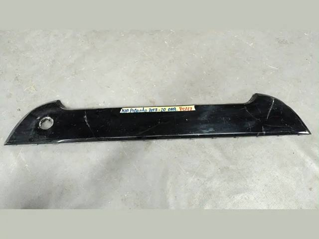
P047Picanto2017-20 · originalLámparas traseras para KIA Picanto 14
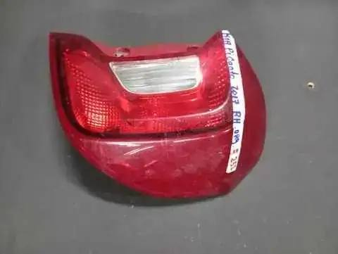
252Picanto2011-14 · lado derecho · original 256Picanto2015-17 · lado izquierdo · original
256Picanto2015-17 · lado izquierdo · original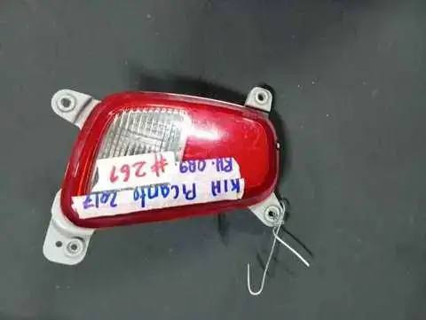
261Picanto2011-14 · lado derecho · original 279Picanto2018-20 · lado derecho · original
279Picanto2018-20 · lado derecho · original 282Picanto2018-20 · lado izquierdo · original
282Picanto2018-20 · lado izquierdo · original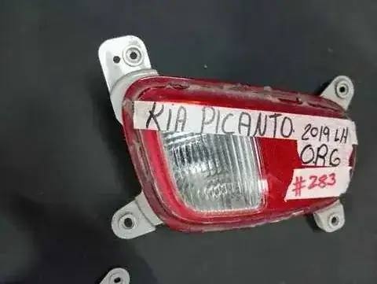
283Picanto2018-20 · lado izquierdo · original 284Picanto2015-17 · lado derecho · original
284Picanto2015-17 · lado derecho · original 285Picanto2018-20 · lado izquierdo · original nuevo
285Picanto2018-20 · lado izquierdo · original nuevo 288Picanto2018-20 · lado derecho · original
288Picanto2018-20 · lado derecho · original 291Picanto2024-26 · lado derecho · original
291Picanto2024-26 · lado derecho · original 297Picanto2021-23 · lado derecho · original
297Picanto2021-23 · lado derecho · original 299Picanto2024-26 · lado izquierdo · original
299Picanto2024-26 · lado izquierdo · original 301Picanto2011-14 · lado derecho · original
301Picanto2011-14 · lado derecho · original 306Picanto2011-14 · lado derecho · original
306Picanto2011-14 · lado derecho · originalCovers de halógena para KIA Picanto 13
 CH016Picanto2004-11 · lado derecho · original
CH016Picanto2004-11 · lado derecho · original CH041Picanto GT Line2017-21 · lado derecho · original
CH041Picanto GT Line2017-21 · lado derecho · original CH042Picanto GT Line2017-21 · lado izquierdo · original
CH042Picanto GT Line2017-21 · lado izquierdo · original CH074Picanto Ion2015-17 · lado izquierdo · original
CH074Picanto Ion2015-17 · lado izquierdo · original CH077Picanto Ion2015-17 · lado izquierdo · original
CH077Picanto Ion2015-17 · lado izquierdo · original CH083Picanto Ion2018-20 · lado izquierdo · original nuevo
CH083Picanto Ion2018-20 · lado izquierdo · original nuevo CH084Picanto Ion2018-20 · lado derecho · original nuevo
CH084Picanto Ion2018-20 · lado derecho · original nuevo CH116Picanto2023-26 · lado derecho · original
CH116Picanto2023-26 · lado derecho · original CH127Picanto Ion2012-15 · lado izquierdo · original
CH127Picanto Ion2012-15 · lado izquierdo · original CH151Picanto2018-20 · lado derecho · original nuevo
CH151Picanto2018-20 · lado derecho · original nuevo CH150Picanto2018-20 · lado izquierdo · original
CH150Picanto2018-20 · lado izquierdo · original CH169Picanto2015-17 · lado izquierdo · genérico nuevo
CH169Picanto2015-17 · lado izquierdo · genérico nuevo CH174Picanto GT2024-26 · lado izquierdo · original
CH174Picanto GT2024-26 · lado izquierdo · originalPuertas para KIA Picanto 7
 PT004Picanto GT2018-26 · lado derecho
PT004Picanto GT2018-26 · lado derecho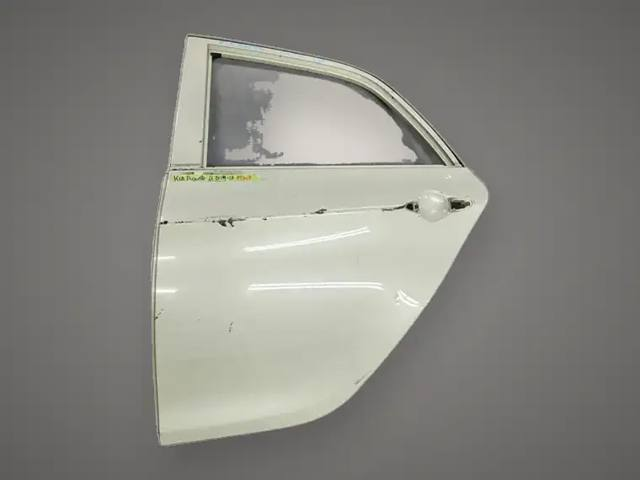
PT007Picanto2011-17 · lado izquierdo PD002Picanto2017-2024 · lado derecho · original
PD002Picanto2017-2024 · lado derecho · original PD003Picanto2011-17 · lado izquierdo · original
PD003Picanto2011-17 · lado izquierdo · original PD008Picanto2011-17 · lado izquierdo · original
PD008Picanto2011-17 · lado izquierdo · original PT015Picanto2011-17 · lado izquierdo · original
PT015Picanto2011-17 · lado izquierdo · original PT013Picanto2011-17 · lado derecho · original
PT013Picanto2011-17 · lado derecho · originalHalógenas y faros antiniebla para KIA Picanto 7
 HA037Picanto2017-24 · lado derecho · original nuevo
HA037Picanto2017-24 · lado derecho · original nuevo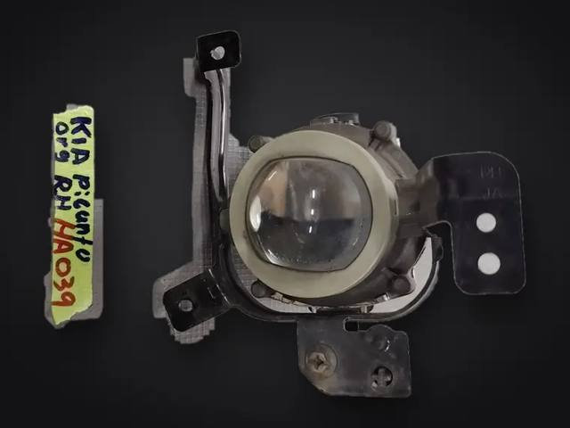
HA039Picanto2018-22 · lado derecho · original HA038Picanto2017-24 · lado izquierdo · original nuevo
HA038Picanto2017-24 · lado izquierdo · original nuevo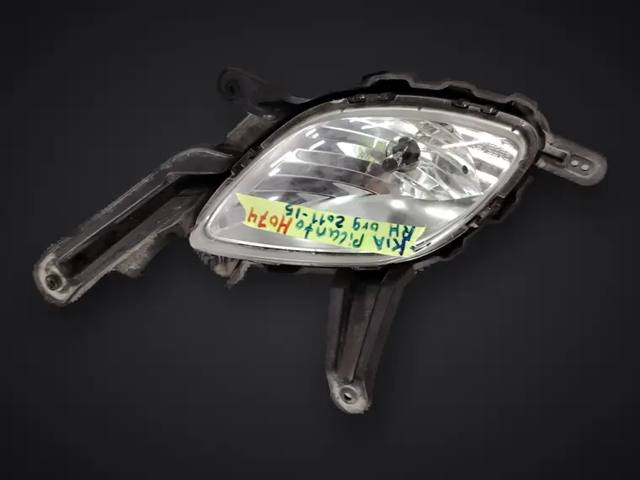
HA074Picanto2011-15 · lado derecho · original HA107Picanto2017-22 · lado derecho
HA107Picanto2017-22 · lado derecho HA108Picanto2017-22 · lado izquierdo · original
HA108Picanto2017-22 · lado izquierdo · original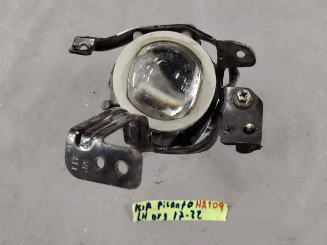
HA109Picanto2017-22 · lado izquierdo · originalCubrepolvos para KIA Picanto 5
 CP038Picanto2011-17 · lado izquierdo · genérico
CP038Picanto2011-17 · lado izquierdo · genérico CP063Picanto GT2011-17 · lado izquierdo · original
CP063Picanto GT2011-17 · lado izquierdo · original CP083Picanto2011-17 · genérico
CP083Picanto2011-17 · genérico CP080Picanto2011-17 · lado izquierdo · genérico
CP080Picanto2011-17 · lado izquierdo · genérico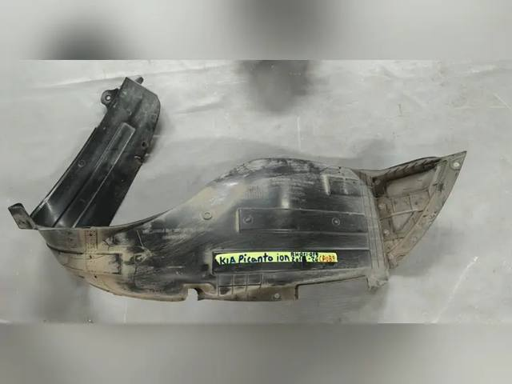
CP089Picanto Ion2018-26 · lado derecho · originalFaros y lámparas delanteras para KIA Picanto 3
 009Picanto GT2018-20 · lado izquierdo · original
009Picanto GT2018-20 · lado izquierdo · original 016Picanto2018-22 · lado izquierdo · original
016Picanto2018-22 · lado izquierdo · original 216Picanto2018-22 · lado izquierdo · genérico nuevo
216Picanto2018-22 · lado izquierdo · genérico nuevoFlares para KIA Picanto 3
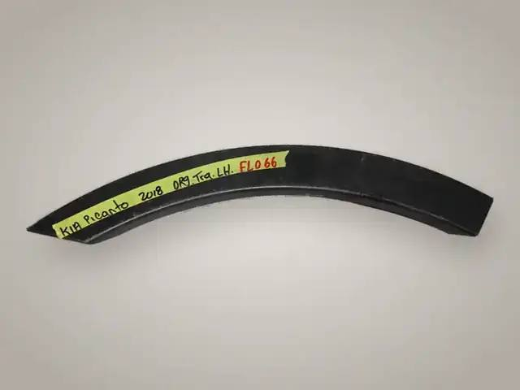
FL066Picanto2018-20 · lado izquierdo · original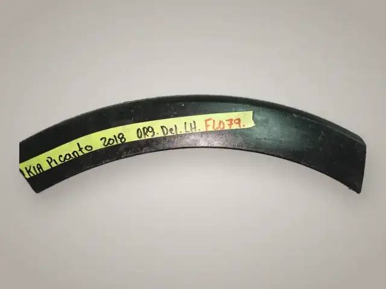
FL079Picanto2018-20 · lado izquierdo · original FL174Picanto2018-23 · lado derecho · original
FL174Picanto2018-23 · lado derecho · originalRetrovisores para KIA Picanto 3
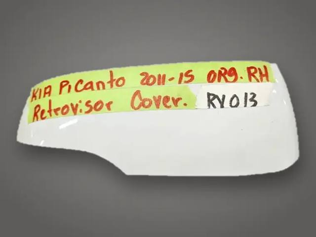
RV013Picanto2011-15 · lado derecho · original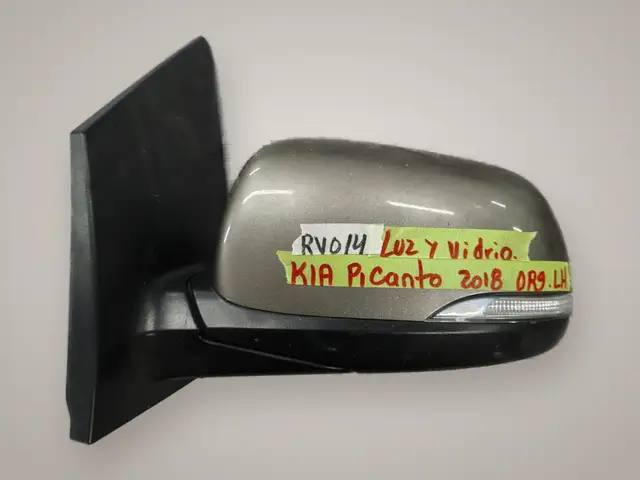
RV014Picanto2018-20 · lado izquierdo · original RV042Picanto2017-23 · lado derecho · original nuevo
RV042Picanto2017-23 · lado derecho · original nuevoTapas de baúl para KIA Picanto 3
 TB024Picanto
TB024Picanto TB025Picanto
TB025PicantoRefuerzos delanteros para KIA Picanto 3
 R034Picanto2017-24 · original nuevo
R034Picanto2017-24 · original nuevo R036Picanto2011-17 · original
R036Picanto2011-17 · original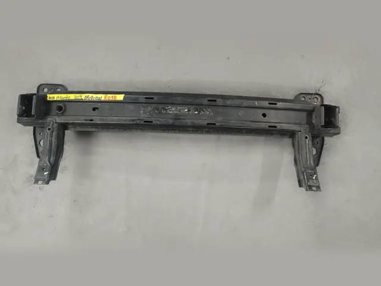
R038Picanto2011-17 · originalRefuerzos traseros para KIA Picanto 3
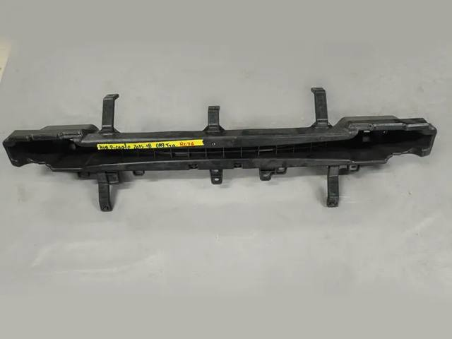
R076Picanto2015-18 · original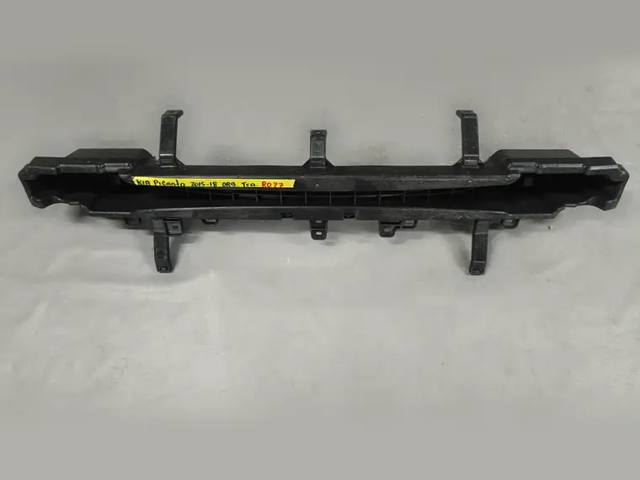
R077Picanto2015-18 · original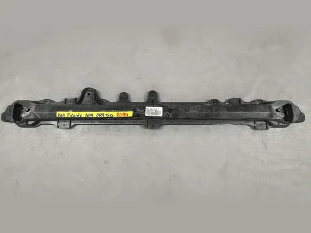
R094Picanto2019 · original 749Picanto
749Picanto 750Picanto
750Picanto 793Picanto GT
793Picanto GT GF053Picanto
GF053Picanto GF131Picanto
GF131Picanto MR009Picanto
MR009Picanto MR010Picanto
MR010Picanto TM001Picanto
TM001Picanto PCh010Picanto
PCh010Picanto DA006Picanto
DA006Picanto DA012Picanto
DA012Picanto VA010Picanto
VA010Picanto